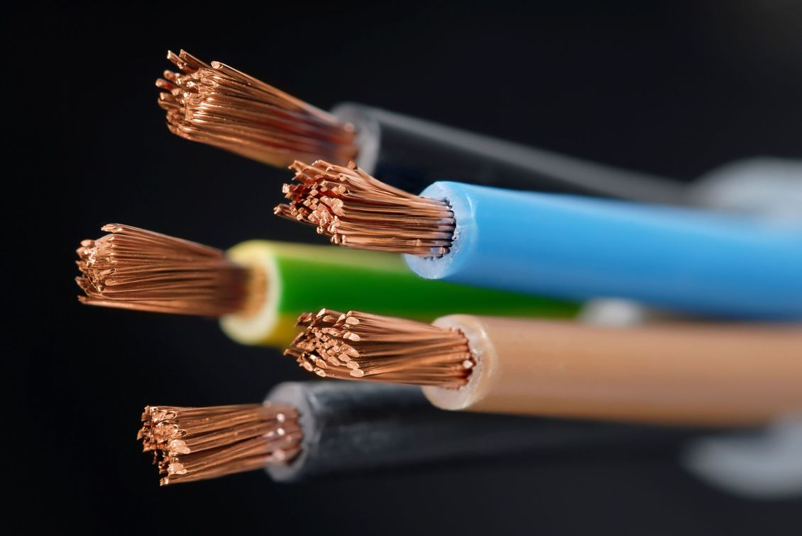

Recycling in Otago
E-Waste
What is E-waste?
E-waste is broken or unwanted electronics. This ranges anyware from washing machines to computers. E-waste can contain hazzardos materials. In batterys for example chemicals can lech out into the enviroment contaiminating it. This means e waste cannot be disposed of by normal means

What do i do with my e waste
Resell
If your electronicss work why not sell them through websites like trade me or face book. This help the enviroment by keeping hazzardos materials away, and it helps you by giving you money. Whats not to like!
Recycle
If your e waste is not able to be resold or donated you may have to throw it away. This shouldnt be done at any regular landfill. This could not only harm the enviroment but waste precious materials insdie the electronics that could be recycled.
| Name | Address | Reigon | Contact Number | Weekday Hours | Weekend Hours |
|---|---|---|---|---|---|
| Green Island Landfill | 9018/9 Brighton Rd | Dunedin | 488 4741 | Monday to Saturday 8.00am - 5.30pm | Sunday 9.00am - 5.30pm |
| AllWaste Cromwell | 70 Bannockburn Road | Central Otago | 445 0824 | 10am - 5pm | 10am - 5pm | Mount Cooee | Kaitangata Highway | Clutha | 419 0200 | 8am - 4.30pm | 10am - 4.30pm |
| Waitaki Resource Recovery Trust | 42 Chelmer St | Waitaki | 434 0999 | 9am - 4.30pm | 10am - 4pm |
| Wastebusters Wanaka | Ballantyne Rd | Queens Town Lakes | 443 8606 | 8am – 5pm | 8am – 5pm |